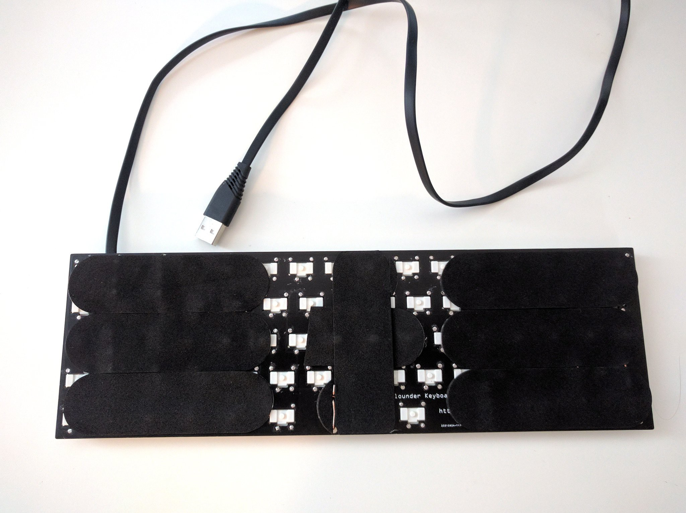

Details¶
Published on 2019-12-17 in Flounder Keyboard.
I finished up a couple of details recently, so that I can say now the project is finished.
First, I added support for the CapsLock key to the firmware. It’s still a hack for now, so the change is not merged upstream, but it works well enough for me, so I decided to keep it. I will work on getting that merged to CircuitPython with a proper API.
Second, I replaced the USB cable with a flat one that just arrived. Flat keyboard — flat cable. It also doesn’t get tangled as much.
I also disabled all the USB endpoints except for HID keyboard, so that it’s visible only as a regular keyboard when connected to a computer.
Finally, I stuck some nice padding to the back of the keyboard. Those are sticky pads for something called “fingerboard”, whatever that is. They work well enough. I had to do two layers in the middle, to prevent it from wobbling, because it’s a bit thinner there, with no stabilizers in that area.
